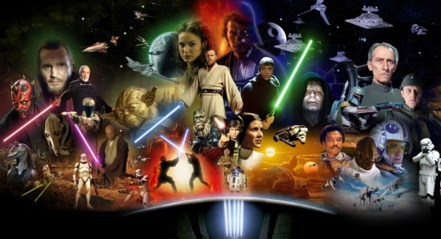

fff
Life of students who study software studio
reported by 60010509 Naravith
The Trade Federation upsets order in the Galactic Republic by blockading the planet Naboo in preparation for a full-scale invasion. The Republic's leader, Supreme Chancellor Finis Valorum, dispatches Jedi Master Qui-Gon Jinn and his apprentice, Obi-Wan Kenobi, to negotiate with Trade Federation Viceroy Nute Gunray. Darth Sidious, a Sith Lord and the Trade Federation's secret benefactor, orders the Viceroy to kill the Jedi and begin their invasion with an army of battle droids. The Jedi escape and flee to Naboo. During the invasion, Qui-Gon saves the life of a Gungan outcast, Jar Jar Binks, from being run over by a droid transport. Indebted to Qui-Gon, Jar Jar leads the Jedi to Otoh Gunga, an underwater city of Naboo. The Jedi try to persuade the Gungan leader, Boss Nass, to help the planet's surface dwellers but are unsuccessful. However, the Jedi manage to obtain Jar Jar's guidance and underwater transport to Theed, the capital city of Naboo. They rescue Naboo's queen, Padmé Amidala, and escape from the blockaded planet on her Royal Starship, intending to reach the Republic capital planet of Coruscant.
Qui-Gon and Obi-Wan escort Padmé to Coruscant so that she can plead her people's case to Valorum and the Galactic Senate. Qui-Gon asks the Jedi Council for permission to train Anakin as a Jedi, but the Council refuses, concerned that Anakin is vulnerable to the dark side of the Force. Undaunted, Qui-Gon vows to take up Anakin as his new apprentice. Meanwhile, Naboo's Senator Palpatine persuades Amidala to call for a vote of no confidence in Chancellor Valorum to elect a more capable leader and to resolve the crisis. Though she is successful in pushing for the vote, Amidala grows frustrated with the corruption in the Senate and decides to return to Naboo. Qui-Gon and Obi-Wan are ordered by the Jedi Council to accompany the queen and investigate the return of the Sith, whom they had believed to be extinct.
drama drama Fri7, 2020
Image description blablabla
Additionally, Brian Blessed, Andy Secombe, and Lewis MacLeod voiced Boss Nass, the leader of the Gungan tribe who allies with the Naboo surface dwellers, Watto, a junk dealer on Tatooine who owns Anakin and his mother as slaves, and Sebulba, an aggressive, scheming podracer who is Anakin's main rival at the Boonta Eve podrace, respectively.
back to content